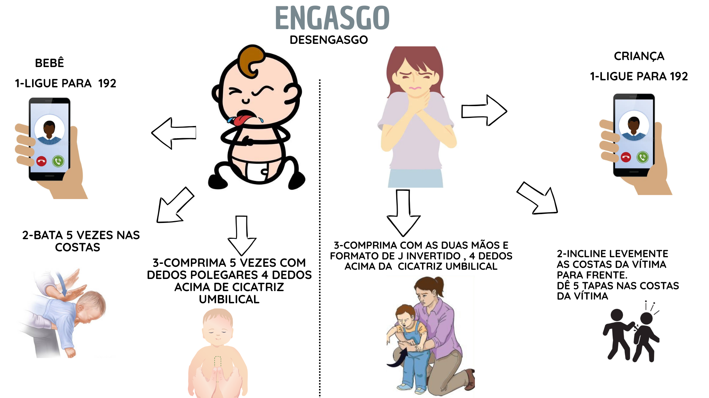
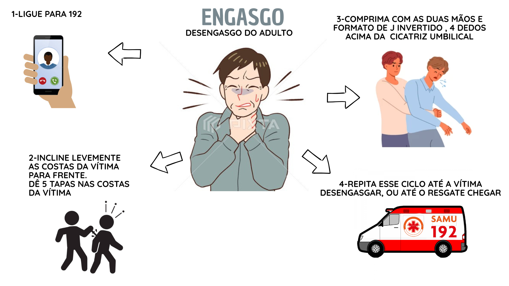

Procedimentos rápidos para obstrução das vias aéreas — mantenha a calma e aja com segurança.

Video Aula
Video AulaIncentive a tosse: a tosse pode expulsar o objeto. Não bata nas costas se a vítima estiver tossindo eficazmente.
Importante: Nunca realize compressões abdominais em gestantes ou pessoas obesas — use compressões torácicas em vez disso. Em caso de dúvida, aguarde socorro profissional.